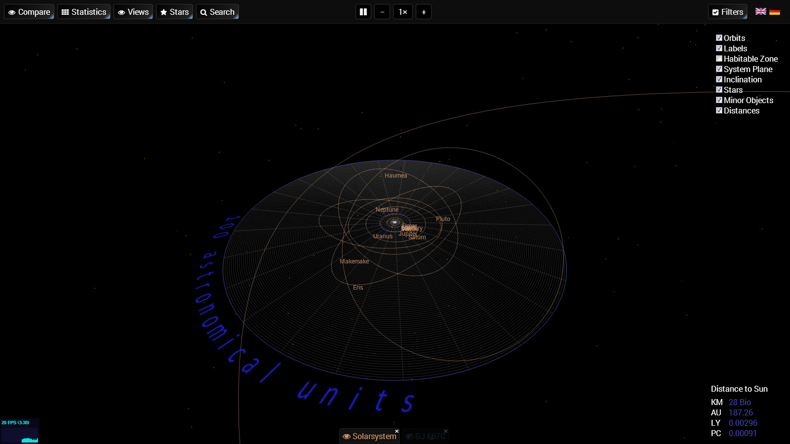
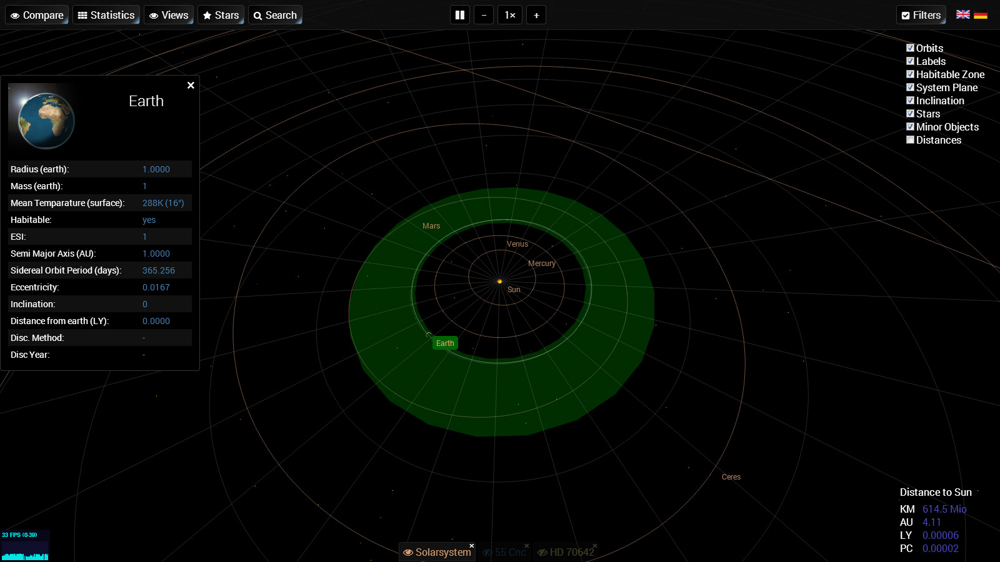
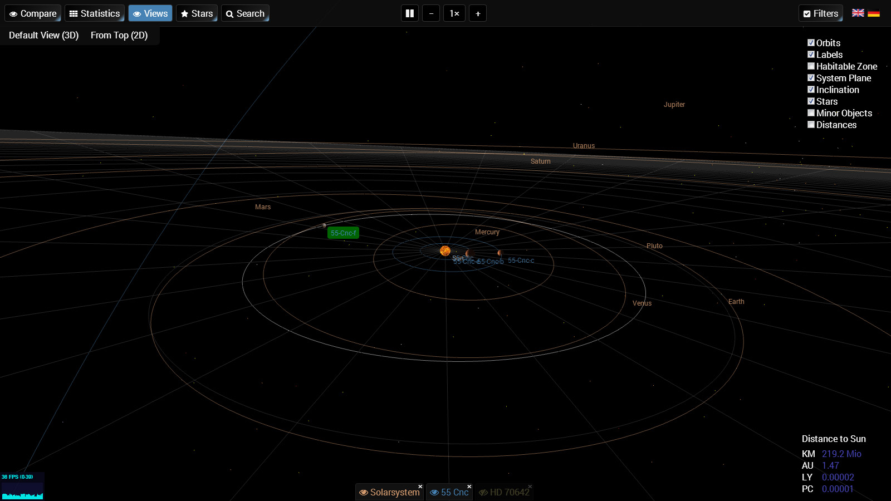

Home
Welcome to the ExoPlanetSystems App
This is an approach to make planet systems accessable easily by visualizing their bodies and orbits. It uses a 3D space to render and animate planet systems like our solar system or exoplanet systems. Feel free to check it out!
For best performance you can use Google Chrome or newest version of Opera. Recommended view in Fullscreen mode (press F11 to enter fullscreen)
About
The app is developed by Tommy Krüger, a master student of International Media and Computing at HTW based in Berlin, Germany. If you want to know more about my work please visit my page at tommykrueger.com
The Code of this App is hosted on github
The App
The application is created with modern web technologies like Three.js WebGL, CSS3 and HTML5. Since these technologies are not yet supported by all major Browsers please make sure to use a modern Browser like Google Chrome, Mozilla Firefox oder Internet Explorer 11
Features
- Animated Solar System
- Investigate Exoplanet Systems
- Load & Compare Planet Systems
- Change 3D Perspective of the Scene
- Render Screenshots For Personal Use
- Show Habitable Zones
- Get Detailed Information of Exoplanets
Screenshots
-

See any known planet systems in an interactive 3D view
-
Get current distribution of known types of exoplanets
-

Investigate habitable zone of our solar system and see animated orbits of planet bodies
-
See habitable zones of exoplanet systems and their planet bodies orbits
-

load, watch, investigate and compare exoplanets, their orbits and habitable zones.
-
Compare sizes of any loaded planet.
Exoplanets
The science of planets that have their orbits around other stars represents an important discipline in modern
astronomy. Whereas in ancient Greek and other cultures 2000 years before people already thought about the existance of other worlds, only in 1992 the scientific proof could be made. PSR B1257+12 B was the first confirmed exoplanet discoverd by observing a pulsar in a distance of around 980 light years from us.
Currently their are more than 1700 confirmed exoplanets (03/2014) from which some are possibly comparable with rock planets such as our earth. Many more wait for confirmation and discovery and are subject of current exoplanet
investigation.
Some interesting planet systems are (all of which are multiple planet systems which might host planets within its habitable zone):
Some Keyfacts
"The largest planet currently known"
Technology
The App uses a set of libraries, JavaScript implementations and other ressources
- Three.js is a JavaScript library for rendering 3D-Graphics in your browser. It is a wrapper for WebGL and supports hardware accessing GPU acceleration. Three.js is also available on github
- jQuery The well known library used to support and simplify js rendering for different browsers
- Underscore.js offers a set of functions that help working with data. E.g. underscore offers some functions and controls which are missing in native JavaScript.
Browser Support
As with most software there a lot's of features which are missing or simply not implemented. The ExoPlanetSystems webapp also has many features currently missing:
Future
As with most software there a lot's of features which are missing or simply not implemented. The ExoPlanetSystems webapp also also has many features currently missing: If you find Bugs or problem feel free to report them in the discussion or add them to github
Credits
Special thanks goes to PHL (Planetary Habitability Laboratory) and their work on the Habitable Exoplanet Catalog. This app is based on the cataloge data.
Also very valuable is the work given by the NASA Exoplanet Archive and the Exoplanets Data Explorer. Even more data is available at http://exoplanets.eu/.